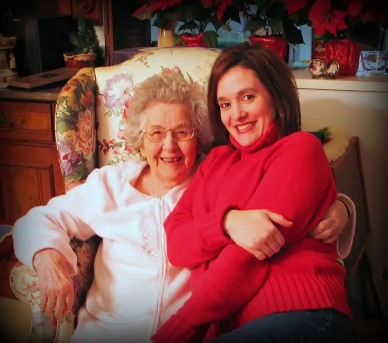
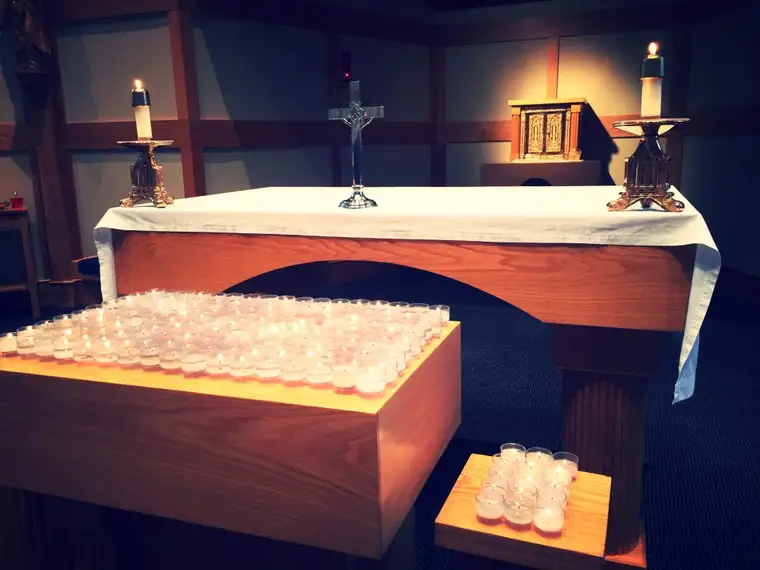
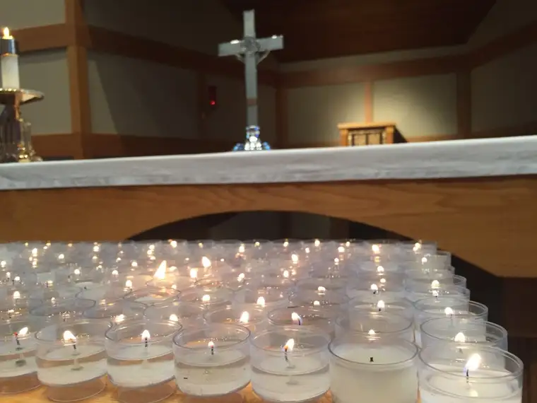
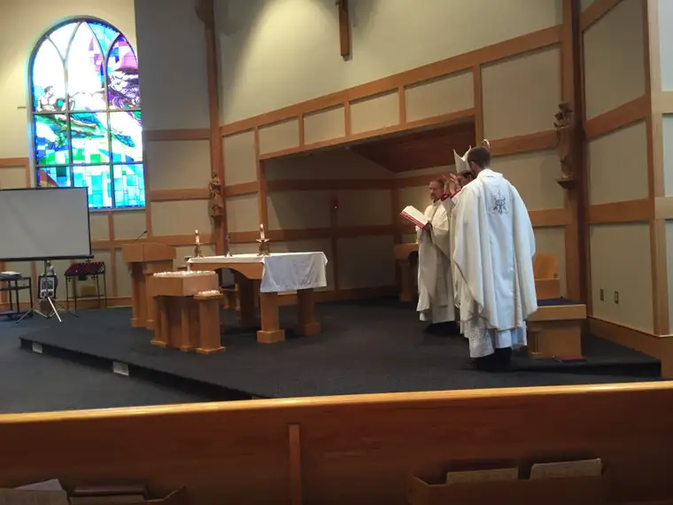

Wednesday was a day more tender than most. It was All Souls Day, the day we remember and pray for those we love who have departed this earthly world ahead of us, and in a special way, the Church remembers those who have left in the past year.

In Bismarck, my mother was getting ready to light a candle at a special Mass, where her mother would be honored. Hours earlier, I arrived at our high school chapel to take my seat among others in our school family who’d experienced loss this past year. At this 44th annual memorial Mass, both my grandmother and my husband’s grandmother — the last of our matriarchs — were among those named, honored and prayed for.
I knew it would be meaningful, but I underestimated the presence and power of my grief, which apparently was still freshly sitting in wait on the surface of my soul.

As one of the teachers read the first reading, from the Book of Wisdom, my emotions began pooling unexpectedly, rushing through my tear ducts. Quietly, they dripped down. Her voice revealed her own deep emotion as each word, so rich in meaning, poured forth with an unusual and fragile intensity.
“The souls of the just are in the hand of God,” she began, struggling, it seemed apparent, to distance herself from the profundity of the words, “and no torment shall touch them. They seemed, in the view of the foolish, to be dead; and their passing away was thought an affliction and their going forth from us, utter destruction. But they are in peace.”
I doubt I was alone in feeling the mixture of both grief and joy she relayed as she continued over the Scriptures.
“In the time of their visitation they shall shine,” she continued, “and shall dart about as sparks through stubble…Those who trust in him shall understand truth, and the faithful shall abide with him in love; because grace and mercy are with his holy ones, and his care is with his elect.”

Later, as 200 candles were lit in honor of the 199 names that were read aloud plus one representing any who’d been missed, including one votive each for our sweet grandmothers, I watched the little lights flickering, “darting about as sparks through stubble.” I could imagine our dear ones dancing in the light with life.

The veil between this world and the next is so thin. And yet some ask, “Why pray for the dead? Isn’t it a moot point? The dead are already with the Lord.”
But to me, it makes so much sense. “The dead,” after all, are my father, my grandparents, my uncles and aunts, my friends, the baby we miscarried. The dead are not dead at all is turns out, but very much alive somewhere, “as sparks through stubble.” It would only seem appropriate to stop praying for these loved ones if life ended at earthly death. But we know this is not so, at least it’s not what we, as Christians, believe, through having witnessed the Resurrection of our Lord.

As Bishop John Folda proclaimed so beautifully during the homily, that day, “It is a sublime work of mercy to pray for the dead.” He added that it is also a time of preparation. “Our loved ones remind us to turn our faces to the Lord and strive to attain holiness.”On All Souls Day especially, he said, “we should dwell on the beauty of who these brothers and sisters were to us. We remember them. We pray for them. We commend them to the mercy of God.”
Our tears, he added sweetly, are “signs of love.” I wiped away those that had fallen from my own eyes, understanding them now not as weakness, but as a message to my dear ones. “You mattered. You still matter. I love you.”
I looked around at everyone else gathered in the chapel, all of whom had lost someone recently. There we all were together, brothers and sisters who’d planned and attended funerals of loved ones and whose hearts were still vulnerable with the losses. There we were, groping together to make sense of death, and the void it leaves behind.
That evening, I read a reflection by Fr. Richard Veras, a priest in New York, that struck home. He described our tendency to think on our beloved departed more kindly than they perhaps deserve. “We tend to say and remember only good things about the person,” he noted. “Is this merely to be polite?”
Especially after my father’s death, I pondered this myself. How was it that all negative thoughts seemed to flee at the sight of him on his deathbed? My father was no saint, and yet in his passing, I recognized him anew, and it felt real. We were left with his beautiful essence, and as his best qualities shone forth and entwined our hearts, that seemed to be all that mattered.
Veras has thought it through as well, suggesting our dismissal of our loved ones’ imperfections at death is more real than anything.
“I propose that it is something deeper,” he wrote. “I have mourned the death of people who have wounded me, but in prayer, especially communal liturgical prayer, resentment fades to nothingness and compassion floods in. Recalling the person’s sins seems not just inadequate, but absurd, even somehow untrue.
“Sin belongs to nothingness,” Veras continued. “It is not who the person is. God looks deeper than appearances, into the heart. Sin distorts me but God can save the essence of who I am, like gold purified in the furnace.”
Veras submitted that we are not being polite in praying for the dead (and looking kindly upon them); rather, we are are being “perhaps truer and more loving in our relationship with them than we have ever been.” It’s as if the mercy of God comes into our souls and becomes our own stance.
In the Catholic Mom’s Prayer Companion later, I read another fitting All Souls Day essay, from an adult daughter reflecting on the loss of her father, and the hope she found in praying for him with others on this day on which we commemorate our loved ones.
“As I fought to steer a course of emotional stability that morning, I was profoundly grateful to belong to a Church that habitually organizes its members to pray in hope for one another.” – Heidi Bratton
I, too, am profoundly grateful for these acts of love that point us to the eternal, and connect us, habitually, to our loved ones, who are not dead after all, but alive, and with whom, by God’s mercy, we will someday be in union once again. Praise God for our eternal connection to our loved ones, and the chance to revive that connection again and again.